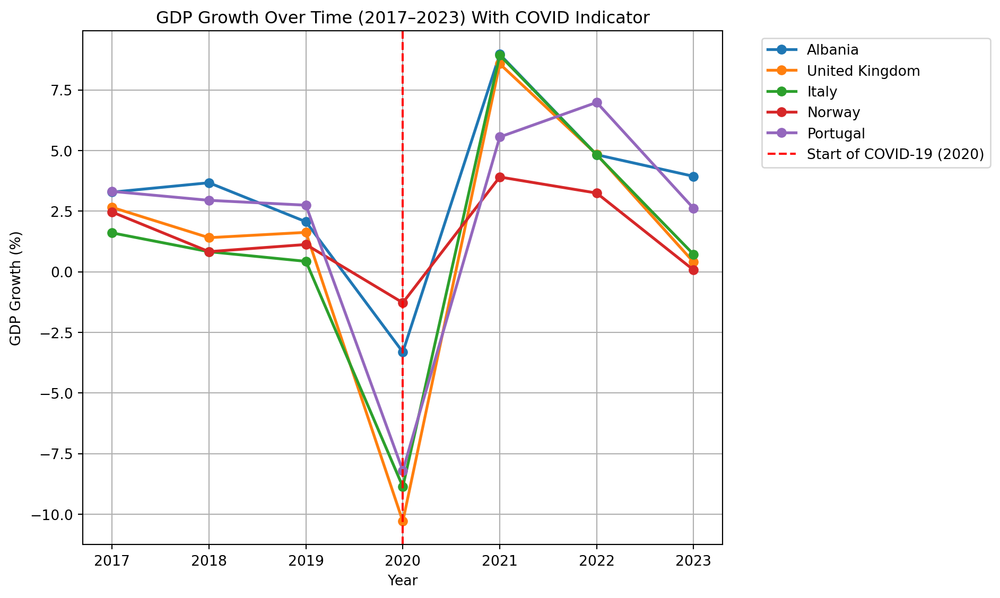
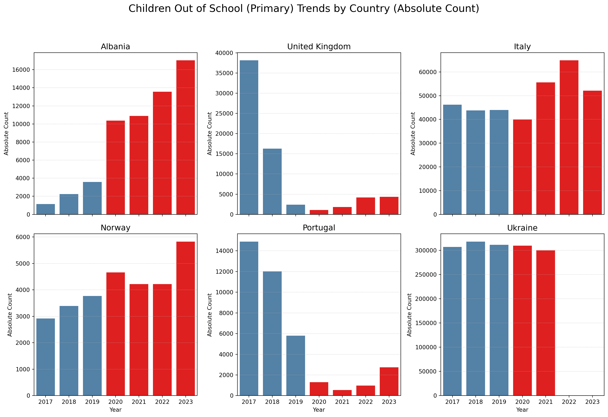

| Country | Ave_GDP_PC | Max_GDP_Growth | Ave_Employ_Ratio | Ave_Children_OutofSchool | |
|---|---|---|---|---|---|
| 0 | Norway | 77261.33 | 3.91 | 62.64 | 4143.43 |
| 1 | United Kingdom | 46278.41 | 8.58 | 59.65 | 9754.14 |
| 2 | Italy | 32201.54 | 8.93 | 44.53 | 49517.43 |
| 3 | Portugal | 21115.96 | 6.99 | 54.35 | 5467.71 |
| 4 | Albania | 4748.84 | 8.97 | 52.47 | 8398.28 |
| 5 | Ukraine | 2244.88 | 5.53 | 50.63 | 309158.20 |
Economic Analysis of European Countries
Introduction
The global economy experienced one of the most significant disturbances in modern history during the 2020 Covid 19 pandemic. Prior to this disruption, Europe overall had relatively predictable economic development defined by gradual increase that stayed overall constant. However, the pandemic forced major economic activities to come to a halt with supply chain breakdowns resulting in the government having to intervene in the labor market to prevent total economic colapse. As we move into the post pandemic era, the pandemic has presented a unique opportunity to investigate how economies of vastly different scale and structure, ranging from established G7 powers to developing transition economies, absorbs shock and regains momentum during major disruptions.
The project examines the economic indicators of six selected European countries: Portugal, the United Kingdom, Norway, Albania, Ukraine, and Italy. The countries were selected because they offer a diverse perspective of the European economic sphere. Norway and UK represent well established economies with higher income that have developed financial resources. Italy and Portugal represents southern European economies with varying levels of debt and labor market dynamics. Contrastingly Albania and Ukraine represent economies that are still undergoing development with unique challenges, with Ukraine further affected by the Russian invasion during the 2022 period that further complicates the recovery process from Covid 19.
Data Description:
We utilize data from World Bank’s World Development Indicators (WDI) database to conduct this analysis. We specifically focus on three major economic indicators to serve as proxies for the health of the nation’s economy: GDP per capita (constant 2015 US$), GDP growth (annual %), Employment to population ratio (15+, total %):
- GDP per capita (constant 2015 US$): This metric provides a view of individual economic wellbeing adjusted for inflation, allowing for accurate comparisons of wealth over time.
- GDP growth (annual %): This indicator measures the rate at which the economy is expanding or contracting showing us the rate at which the economy is being impacted or recovering.
- Employment to population ratio (15+, total %): This variable offers insight into the labor market’s ability to utilize its available human resources. This is especially a critical factor during the pandemic when lock-downs forced mass unemployment.
In addition to these major economic indicators we have also included a secondary indicator: rate of primary school children out of school. Including this indicator will provide a secondary dimension into the socioeconomic stability of the nations. The dataset we selected spans an eight year period from 2017 to 2024 giving us a comprehensive comparison of the precovid baseline (2017-2019), the disruption year (2020), and the recovery period (2021-2024).
Research Objectives:
The primary objective of this analysis is to quantify the magnitude of the pandemic’s impact and the differing recovery speeds among these European countries.
Consequently, this project addresses the following research questions: How have GDP per capita, employment-to-population ratios, and GDP growth trends changed before and after COVID-19 across selected European countries, and what do these trends reveal about their economic development trajectories? Furthermore, which indicators are the most correlated with each other? Through time-series visualization and correlation analysis, this report seeks to map the economic scarring left by the pandemic and the varying paths toward recovery.
Data Analysis
Summary of Key Variables
GDP per capita

The GDP per capita trends reveal a distinct tripartite economic stratification among the selected countries, where the magnitude of global shocks is visually relative to the baseline wealth of the nation.
High-Income Stability: Norway and the United Kingdom occupy the upper tier of the analysis. Norway exhibits exceptional stability; the 2020 pandemic shock appears as a minor fluctuation against its high baseline wealth (approx. $75k–$80k), followed by a return to gradual growth. The United Kingdom displays a clearer “V-shaped” impact in 2020, dropping toward $42k before recovering. However, the UK’s trajectory notably flattens post-2022, suggesting a slowing of momentum in the post-pandemic recovery phase compared to Norway’s steady rise.
Southern European Parallelism: Italy and Portugal follow strikingly parallel paths in the middle-income band. Both nations show clear, synchronized contractions in 2020—likely driven by the vulnerability of their service and tourism-oriented sectors to lockdowns. Their recovery from 2021 to 2023 has been consistent and positive, with both lines trending upward in unison, though neither shows signs of aggressive expansion beyond pre-pandemic trends.
Emerging Economies and Divergence: The most critical insight lies in the lower income band (below $10k), where the scale of the graph compresses the visual volatility. Both Albania and Ukraine begin with similar baselines and flat trajectories pre-2020. However, a significant divergence occurs at the 2022 mark. While Albania continues a slow but steady upward “catch-up” trend, Ukraine’s trajectory decouples, flattening and dipping slightly. While the absolute drop appears small due to the Y-axis scale being stretched by Norway’s wealth, this stagnation represents a profound economic deviation caused by the 2022 invasion, effectively halting the development momentum seen in its peer, Albania.
GDP Growth Overtime

The GDP growth patterns across the five countries show stable and moderate expansion from 2017 to 2019, with most countries growing between 1 to 4 percent. Norway and Portugal performed slightly better than the others during this period, while Italy and the United Kingdom exhibited slower but still positive growth. Overall, the pre pandemic years reflect steady macroeconomic conditions, market strength, and no drastic disruptions.
A clear structural break appears in 2020 with the onset of COVID-19. All countries experienced sharp contractions, though the severity differed. The United Kingdom and Italy were hit the hardest, dropping to around negative 10 percent and negative 8 percent. Albania, Portugal, and Norway also declined substantially. This synchronized downturn aligns with the global shock from lockdowns, collapsing demand, and widespread economic restrictions.
Growth rebounded strongly in 2021, with Albania, Italy, and Portugal showing the fastest recovery pace, reaching growth rates above 7 percent. Norway and the United Kingdom also recovered but more moderately. By 2022 and 2023, all countries returned to more stable levels of growth, though differences in recovery speed reflect structural economic differences and policy responses. Overall, the graph highlights the sharp COVID shock followed by an uneven but significant rebound across all five countries.
Labor Market Participation

A uniform COVID-19 shock hit six countries’ labor markets in 2020, followed by varied recoveries. Norway showed the most resilience, quickly surpassing pre-pandemic employment levels by 2022 due to a robust labor market and effective policies. The UK recovered more slowly, stabilizing below its 2019 peak, suggesting persistent labor shortages. Portugal rebounded consistently after a 2020 contraction as tourism and services reopened. Albania saw a sharper initial decline but a powerful resurgence, exceeding pre-COVID levels by 2022, possibly due to increased labor participation. Italy maintains the lowest employment ratio, while showing a modest upward trend since 2021. Structural weaknesses, especially low female and youth employment, constrain improvement. In contrast, Ukraine’s employment ratio continued to fall post-2021 due to the ongoing conflict, resulting in population displacement and severe economic disruption.
Number of children out of (Primary) School

The grid of bar charts reveals the different trends in the out-of-school number for each country, emphasizing that the post-2020 period [highlighted in red] varied for each country. The pandemic acted more as a stress test than an actual shock to European education systems.
Albania and Italy demonstrated an increase in the out-of-school number following 2020. This rise is clearly visible in the increasing height of the red bars (2020–2023). Albania’s number increased from 3,575 in 2019 to over 17,000 by 2023. Italy, which was originally the second-highest after Ukraine, peaked in 2022, suggesting that pandemic-related disruptions surpassed structural weaknesses in retention in both countries.
The United Kingdom and Portugal both showed a clear decline in the out-of-school population that began before 2020, reaching their lowest levels around 2020-2021. This trajectory indicates that strong pre-existing enrollment policies maintained their effectiveness, showing high resilience to the crisis. Norway similarly maintained a stable and very low number throughout the entire period, reflecting an equally effective education system.
Ukraine maintained a high number of children out of school through 2021. The lack of data for 2022 and 2023, along with the known effects of conflict on population and labor markets, suggests a severe deterioration in educational access beyond the scope of the pandemic alone.
Correlation Analysis of Key Economic Indicators

This correlation matrix summarizes the relationships among GDP per capita, GDP growth, employment-to-population ratio, and primary school children out of school across the six European countries. The most notable positive relationship appears between GDP per capita and employment ratio (0.65), indicating that countries with stronger labor market participation tend to have higher income levels. This suggests that long-term economic development and labor utilization move closely together.
In contrast, GDP growth shows very weak correlations with all other variables, implying that short-term economic fluctuations do not strongly align with structural indicators such as income level, employment conditions, or education outcomes. This highlights that growth rates can be highly volatile and influenced by temporary shocks, especially during crisis periods like COVID-19.
The negative correlation between children out of school and GDP per capita (−0.45) suggests that higher-income countries generally experience lower levels of educational disruption, reflecting better access to schooling and stronger institutional capacity. Similarly, the negative relationship between children out of school and employment ratio (−0.35) indicates that weaker labor markets tend to coincide with poorer educational outcomes.
Overall, the correlation results reveal a clear structural linkage between economic development, labor market strength, and educational stability, while GDP growth remains largely independent. These findings complement the time-series results by showing that although short-term growth fluctuates sharply during COVID-19, long-run development indicators remain tightly connected.
Results
Between 2017 and 2023, the selected European economies demonstrated a three-tiered response to major shocks, exemplified by wealth, labor, and educational characteristics. Norway and the United Kingdom, representing high-income economies, demonstrated a stable and rapid recovery; Norway’s GDP per capita ($75k–$80k range) showed only a minor fluctuation in 2020, and its employment ratio quickly surpassed pre-pandemic levels by 2022. Italy and Portugal, occupying the middle-income band, experienced similar contractions in GDP per capita and GDP growth in 2020, followed by a moderate recovery through 2023. Albania and Ukraine, the emerging economies, displayed the greatest differences. While Albania demonstrated a strong employment resurgence, Ukraine’s employment saw a large dip due to the news of the incoming 2022 invasion. The GDP Growth analysis confirmed a connected drop for all nations in 2020, with Italy and the UK hit hardest. The correlation matrix quantifies links between all 4 variables: GDP per capita correlates positively with employment ratio, +0.65, and both correlate negatively with children out of school, –0.45 and –0.35.
Discussion
These patterns emphasize that the COVID-19 pandemic served primarily as an economic stress test, exposing structural vulnerabilities rather than imposing a uniform shock. Advanced economies (Norway, UK) leveraged financial resources and robust labor markets to rapidly absorb the shock, demonstrating that high-baseline wealth translates directly into economic resilience. Southern European nations (Italy, Portugal) faced greater initial contraction due to their service-oriented economies, yet their synchronized recovery confirms shared regional dynamics and policy successes in reabsorbing labor. The most telling divergence is between the emerging economies; while Albania showed resilience in its labor market, the simultaneous increase in children out of school suggests that rapid economic recovery alone is insufficient to guarantee overall socioeconomic stability. This further demonstrates that external geopolitical events completely overwhelm economic trends; Ukraine’s trajectory decoupled entirely in 2022, confirming that conflict is a far greater structural disruptor than the pandemic. Although the correlation analysis suggests a strong linkage between long-term development, GDP per capita, and labor strength, it also shows that short-term GDP growth is weak and volatile, easily influenced by temporary crises and policy responses.
Conclusion
Sustaining economic stability through global disruptions such as a pandemic requires a strong structural backbone, not merely volatile growth. Our findings confirm that advanced economies, characterized by high GDP per capita and strong labor markets, possess the necessary capital and policy infrastructure to rapidly recover from global shocks. However, this study also highlights a prominent issue. While recovery in GDP and employment was relatively similar for all countries, the socioeconomic health of nations, measured by educational access, remains inconsistent. The negative correlation between income and out-of-school children confirms that development progress is interconnected; therefore, future policy interventions must be designed not just to boost GDP, but to protect vulnerable populations and social institutions, like education, so that economic resilience is shared and sustained across all layers of society. The experience of Ukraine provides a final reminder that stable development is fundamentally dependent on geopolitical stability, an essential indicator in contrast to the economic effects of all other crises.